Temple of Ikov
Description: A mysterious stranger called Lucien asks you to go on a mission deep under the Temple of Ikov in central Kandarin. He wants you to retrieve an artifact known as the Staff of Armadyl. Towards the end of the quest you are presented with a choice on how to complete the quest.Difficulty: Experienced
Length: Long
Items & Skills Needed:
- 42 Thieving
- 40 Ranged
- The ability to defeat a level 84 enemy with Ranged
Recommended:
- 43 Prayer
- A trustworthy friend to do the quest with
Reward: 1 Quest point, 10,500 Ranged XP, 8,000 Fletching XP, Boots of lightness, Pendant of Lucien which grants access to a door in the Temple of Ikov, Shiny key for a shortcut between the Temple of Ikov and McGrubor's Wood, Armadyl pendant (if you sided with Lucien)
Instructions:
Talk to Lucien, he will be in the Flying Horse Bar, north west of the Paladin's Tower, on the west side of the river. Lucien will tell you about how he needs the Staff of Armadyl. He gives you a pendant and asks you to get it for him.
Put on the pendant and get ready to go to the dungeon. Get a candle from the Catherby Candle shop, and light it with a tinderbox.
The things you should bring on this (1st) trip:
The Pendant of Lucien (never take this off)
Your lit candle
A knife
(Note: If you have a trustworthy friend doing the quest with you, bring the items for the second trip as well, and have them hold onto them briefly during this part. This will save you the time of banking.)
Wearing the pendant, go into the Temple of Ikov (located directly southeast of the Ranging Guild).
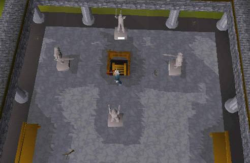
Go down the ladder and head west through the temple and then down the stairs. Go to the back of this room, cut through the spider web, and pick up the Boots of Lightness*. Put them on, drop your knife and return up the stairs.
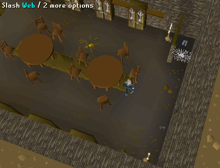
Go north into the room with the skeletons in it, and head to the west side of this room (you will see a broken bridge). Before going over the bridge, MAKE SURE YOUR WEIGHT IS BELOW ZERO!!! If it's above zero you will fall in the lava, causing you 20 HP of damage. Once across the bridge, go into the room and grab the lever piece on the ground. Leave the temple and go back to the bank.
(Note: If you are above 0 kg weight and fall into the lava, you can still grab the lever piece because you'll land on the opposite side of the lava bank. Climb up the ladder and you will be in hemenster. You will have to walk back to the temple again if this happens)
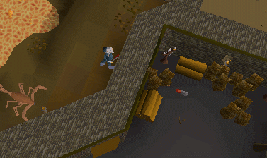
The things you should bring on this (2nd) trip:
The Pendant of Lucien (never take this off)
Your melee resistant armor
Lots of food
The lever piece
(Weapon is optional—only bring it if you plan to kill the ice spiders. I just ignored them for this part and took the damage. If you are high combat level, then bring the items needed for the 3rd trip as well. You'll need to withstand attacks from level 61 ice spiders for about 15 minutes while running around in the cavern. I was level 74 with full rune armor and ate eight bass during this part.)
In the first area of the temple when you first climb down the ladder, there is a lever bracket on the wall. Use your lever piece on this, then pull the lever. That will unlock the south gate.
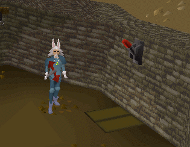
Follow the path until you reach some chests, check every chest, eventually one will have some ice arrows in them. Keep checking the different chests until you have around 50. Remember, the arrows are always in random chests. Check every one of them—even the chest you just found the arrows in. The chests are in narrow offshoots of the main cavern. It is a long walk to get to the chests from the gate, so don't feel like you are lost. And don't expect the chests to be sitting out in the open, look on the minimap for the narrow offshoots from the main cavern.
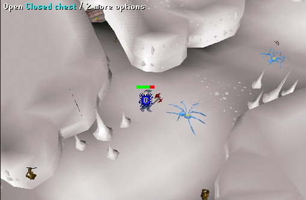
Leave the snowy area and go back to the bank.
The things you should bring on this (3rd) trip:
The Pendant of Lucien (never take this off)
Magic resistant armor
The yew or magic bow
Lots of food
Prayer Restore Potions (if you can use Protect from Magic, if you have 50 or higher ranged, then full prayer will be sufficient to kill him and you will not need to recharge until you are finished)
For your armor, I would suggest Dragon Hide, because it gives 30+ magic defence, while rune armor gives around -10. Also, dragon hide armor gives you a ranged attack bonus which is very helpful in killing the Fire Warrior. If you have rune armor, it is better to fight him naked. Rune armor gives you a ranged attack penalty and a mage defence penalty. This guy mages you, he will not attack any other way, and you cannot hide behind a rock while you fight him.
Equip everything, go down the ladder, north through the skeleton room, then straight north to a lever with a trap door. DO NOT IMMEDIATELY PULL THE LEVER! Search for traps on the lever and disarm it, then you may pull the lever. If you pull the lever without disarming the traps, then the trap door will open and you will fall on spikes taking up to 20 hp in damage.
Then take the west branch until you get to a door. Open the door and go across the room to the next door. Try to open that door and Lesarkus the Fire Warrior will appear and say you may not pass. Then he will start maging you. You may range him with the ice arrows only. (I suggest using Rapid mode for your bow; use Accurate if you have below 50 Ranged.) If you have magic block put this on so he can't hurt you, and drink your prayer potions whenever your prayer is low. Once you kill him go back to the bank.
NOTE: If you do not kill him fast enough, he will stop the battle and tell you to come back when you have a better weapon. You can try again by simply trying to open the door again. Perhaps train your ranged skill some more or purchase a ranging pot. If you know a high level herbalist they will probably trade one for Dwarf Weed. This happened to my friend, and for her 2nd attempt, she merely un-equipped her rune armor and then killed him pretty easily.
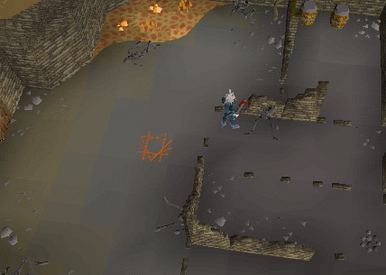
The things you should bring on this (4th) trip:
The Pendant of Lucien (never take this off)
Melee resistant armor
Weapon
Some food
20 limpwurt roots
Go down the ladder and back to where you killed Lesarkus the Fire Warrior. Go through the door he wouldn't let you through (you do not have to kill him again). You will see a witch named Winelda, talk to her—she will offer to teleport you across the lava in exchange for your limpwurt roots.
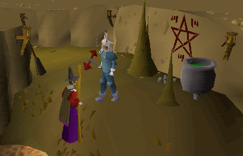
Agree. Once over the lava, follow this path all the way to the end, past the room and the ladder, and you will see a shiny key on the ground.
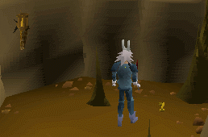
Pick it up, and return to the room with the guardians in it. The Staff is in the northwest corner, but first, you have to make a decision.
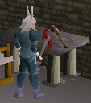
Side with the Guardians
Take off your Pendant of Lucien. Talk to one of the Guardians of Armadyl. You'll tell them that you're working for a man named Lucien. They'll be quite disappointed and give you a pendant, telling you to kill him.
You will find yourself in a room just north of McGrubbor's Wood. Use your shiny key on the door and you should go through. Go to Varrock, and exit via the northeast exit, follow the wall surrounding the castle, west then south, and you will see a house with Lucien in it.
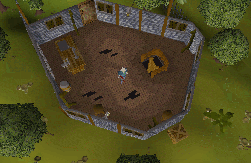
Wearing your pendant attack him (he's only level 14). You will be rewarded once you kill him.
Side with Lucien
There is a small room within the larger room that contains the staff. When you try to take it, the nearby Guardians (level 36-40) will attack you. Pick it up once all of them are dead. Leave the big room and go up the ladder near you.
You will find yourself in a room just north of McGrubbor's Wood. Use your shiny key on the door and you should go through. Go to Varrock, and exit via the northeast exit, follow the wall surrounding the castle, west then south, and you will see a house with Lucien in it.
Talk to him and give him the staff, you will be rewarded.
*The Boots of Lightness reduce your weight by 4 kg, making them great for running because you regain energy faster. It's not a bad idea to grab a few of these on your first trip back to the bank.
Congratulations, Quest Complete!
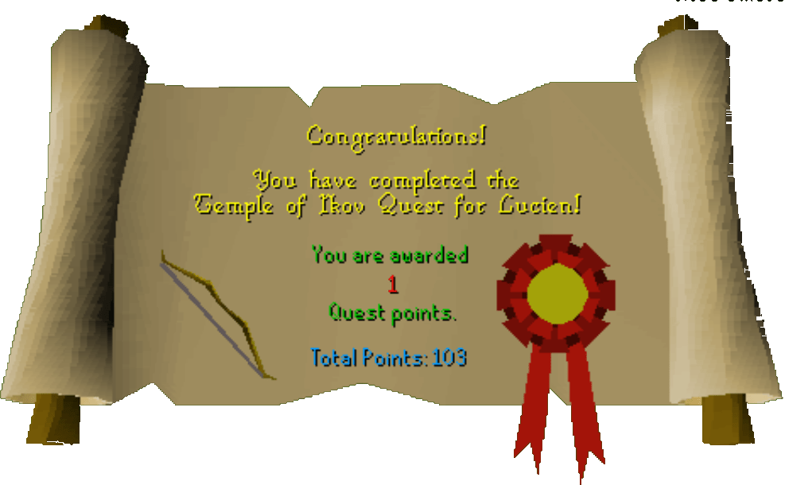
This quest guide was written by Pirate and mage017. Thanks to Your Homey 1 for corrections.
This quest guide was entered into the database on Sun, Apr 25, 2004, at 06:17:58 PM by Freakybat and CJH and was last updated on Mon, Aug 02, 2004, at 08:42:56 AM.